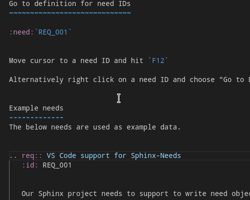
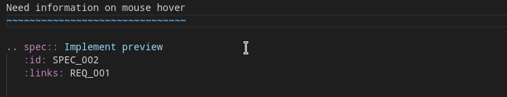

Features#
This page is used as example source for all feature presentations.
Auto-generated need IDs#

Type : in the line directly below a need directive like .. req:: and select :id: in the IntelliSense interface.
Hint
If needls can’t detect the type of the need it will just output ID.
The ID is calculated using a hash function of the current user, doc URI, line number and the need prefix (e.g.). To lower the risk of ID conflicts further a pseudo-randomization is part of the ID generation.s
Predefined Snippets#

Type .. and choose to auto-complete the directive in the IntelliSense interface.
ID selection#
After :need: role or :links: option type -> which triggers the auto-completion of needs
Select a need type from the IntelliSense dialog (use arrow keys)
Type > again to trigger the doc completion (file in which needs are specified)
Type / to complete the doc path, continue until the doc path is completed to a *.rst file
Type > to trigger completion of a specfic need by ID, expand the completion item info to see the content of the selected need
Go to definition for need IDs#
Move cursor to a need ID and hit F12
Alternatively right click on a need ID and choose “Go to Definition” from the context menu
Need information on mouse hover#
Move the mouse cursor over any need ID
Example data#
The below needs are used as example data.
Our Sphinx project needs to support to write need objects more easily. |
We use Open-Needs IDE to fulfill VS Code support for Sphinx-... (REQ_001). |